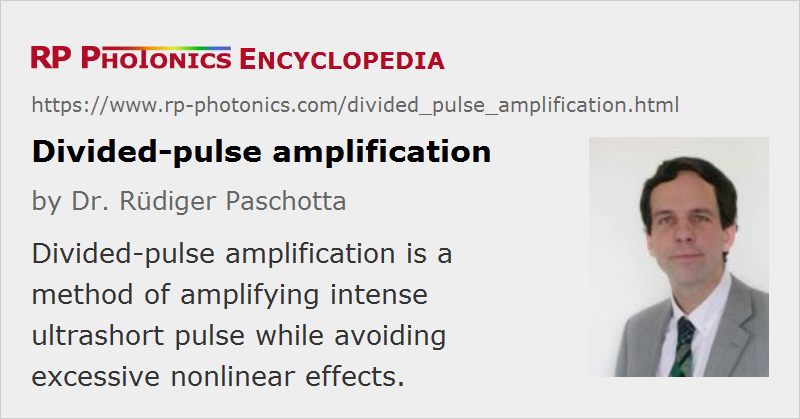

Divided-pulse Amplification
Acronym: DPA
Definition: a method of amplifying intense ultrashort pulse while avoiding excessive nonlinear effects
Categories: light pulses, methods
How to cite the article; suggest additional literature
Author: Dr. Rüdiger Paschotta
Divided-pulse amplification [3] is a technique introduced for mitigating the problem of excessive nonlinear phase shifts in amplifiers for ultrashort pulses. Such phase shifts can result from the high peak power of amplified pulses when these propagate e.g. in the gain medium of an amplifier device. They can result in significant spectral broadening and distortion of the pulses, or even in optical damage of the amplifier.
Principle of Divided-pulse Amplification
The basic principle of divided-pulse amplification is to divide each pulse into a sequence of several (or even many) pulses before amplification, and to recombine the pulses after amplification. In principle, this pulse division could be achieved by using beam splitters (e.g. partially reflective dielectric mirrors), but the recombination would then be difficult due to the high required accuracy of path lengths. Therefore, the proposed technique for splitting and recombining is one which was invented much earlier [1]. A linearly polarized pulse is split into two pulses by sending it through a birefringent crystal, with an angle of 45° between the original polarization direction and the optical axis of the crystal. The crystal length is chosen such that the group velocity mismatch leads to a relative time delay larger than the pulse duration. (Time delays of several picoseconds can easily be obtained with reasonable crystal lengths.) The method can then be repeated with additional crystals, which are chosen to be longer than the first one – ideally, the crystal length is doubled in each step, obtaining an equidistant pulse train. The orientation of the optical axis also always changes by 45° for each crystal.
Recombination (after amplification) is then possible e.g. by sending the pulses in the reverse direction through the same sequence of crystals, after rotating their polarization by 90° (e.g. with a Faraday rotator). An alternative is to use a second set of crystals. Interestingly, it is not necessary to match the crystal lengths to a fraction of a wavelength, which would be difficult to achieve; it is only that the recombined pulses will then not be linearly polarized. It may actually occur that the pulse distortions in the amplifier also affect the polarization of the recombined pulses.
As the number of pulses is doubled with each crystal, 5 crystals can generate 25 = 32 pulse copies. In principle, 10 crystals would already allow for 210 = 1024 pulses, but at least some of the crystals would then have to be very long. In the picosecond regime, a 32-fold peak power reduction may sometimes be sufficient, whereas for femtosecond pulses one would often desire much more.
Comparison with Chirped-pulse Amplification
An alternative (older and more common) method for mitigating the problem of excessive nonlinear phase shifts is chirped-pulse amplification, where the pulses are dispersively stretched, then amplified (while having a moderate peak power), and then recompressed in a dispersive compressor such as a pair of diffraction gratings.
The two methods differ in various respects:
- For relatively long (picosecond) pulses, chirped-pulse amplification (CPA) requires impractically large amounts of dispersion. This problem does not exist with divided-pulse amplification (DPA).
- For fairly short (femtosecond) pulses, the effect of pulse broadening via chromatic dispersion of the birefringent crystals can become problematic with DPA, even though the use of optimized materials may allow for significant further improvements. (For shorter pulses, shorter crystals may be used, but this does not fully compensate the effect of shorter pulses, since the sensitivity of pulses to dispersion scales with the inverse square of the pulse duration. The effect of optical nonlinearities scales in a more benign manner.)
- The loss of pulse energy can be significantly lower with DPA than with CPA with a pair of diffraction gratings.
- Concerning alignment, CPA can be difficult when a pair of diffraction gratings with large dispersion is used. This problem does not exist with DPA.
In conclusion, it appears that chirped-pulse amplification is generally more suitable for pulse durations far below 1 ps, whereas divided-pulse amplification offers advantages for longer pulses. The decision regarding a particular method can, however, also depend on other circumstances.
It is generally not practical to combine the original concept of divided-pulse amplification with chirped-pulse amplification, since the latter requires rather long chirped pulses, so that a huge birefringence and/or very long birefringent optical parts would be required to avoid interference effects in divided-pulse amplification. One requires other means for creating sufficiently large time delays, such as cascaded Mach-Zehnder-type beam splitters/combiners [2, 6].
Questions and Comments from Users
Here you can submit questions and comments. As far as they get accepted by the author, they will appear above this paragraph together with the author’s answer. The author will decide on acceptance based on certain criteria. Essentially, the issue must be of sufficiently broad interest.
Please do not enter personal data here; we would otherwise delete it soon. (See also our privacy declaration.) If you wish to receive personal feedback or consultancy from the author, please contact him e.g. via e-mail.
By submitting the information, you give your consent to the potential publication of your inputs on our website according to our rules. (If you later retract your consent, we will delete those inputs.) As your inputs are first reviewed by the author, they may be published with some delay.
Bibliography
| [1] | H. E. Bates, R. R. Alfano, and N. Schiller, “Picosecond pulse stacking in calcite”, Appl. Opt. 18 (7), 947 (1979), doi:10.1364/AO.18.000947 |
| [2] | S. Podleska, “Verfahren und Vorrichtung zum Strecken und Rekomprimieren von optischen Impulsen, insbesondere von Laserimpulsen hoher Intensität”, DE Patent 102006060703A1 (2006). |
| [3] | S. Zhou, F. Wise and D. G. Ouzounov, “Divided-pulse amplification of ultrashort pulses”, Opt. Lett. 32 (7), 871 (2007), doi:10.1364/OL.32.000871 |
| [4] | L. J. Kong et al., “Generation of megawatt peak power picosecond pulses from a divided-pulse fiber amplifier”, Opt. Lett. 37 (2), 253 (2012), doi:10.1364/OL.37.000253 |
| [5] | Y. Zaoter et al., “Femtosecond fiber chirped- and divided-pulse amplification system”, Opt. Lett. 38 (2), 106 (2013), doi:10.1364/OL.38.000106 |
| [6] | M. Kienel et al., “Analysis of passively combined divided-pulse amplification as an energy-scaling concept”, Opt. Express 21 (23), 29031 (2013), doi:10.1364/OE.21.029031 |
| [7] | A. Klenke et al., “Divided-pulse nonlinear compression”, Opt. Lett. 38 (22), 4593 (2013), doi:10.1364/OL.38.004593 |
| [8] | E. S. Lamb et al., “Divided-pulse lasers”, Opt. Lett. 39 (9), 2775 (2014), doi:10.1364/OL.39.002775 |
| [9] | Q. Hao et al., “Divided-pulse nonlinear amplification and simultaneous compression”, Appl. Phys. Lett. 106, 101103 (2015), doi:10.1063/1.4914882 |
| [10] | F. Lesparre et al., “Yb:YAG single-crystal fiber amplifiers for picosecond lasers using the divided pulse amplification technique”, Opt. Lett. 41 (7), 1628 (2016), doi:10.1364/OL.41.001628 |
| [11] | B. Webb et al., “Divided-pulse amplification to the joule level”, Opt. Lett. 41 (13), 3106 (2016), doi:10.1364/OL.41.003106 |
| [12] | F. Guichard et al., “Coherent combining efficiency in strongly saturated divided-pulse amplification systems”, Opt. Express 24 (22), 25329 (2016), doi:10.1364/OE.24.025329 |
See also: optical amplifiers, ultrashort pulses, nonlinearities, nonlinear pulse distortion, laser-induced damage, chirped-pulse amplification, The Photonics Spotlight 2007-03-11
and other articles in the categories light pulses, methods
|  |
If you like this page, please share the link with your friends and colleagues, e.g. via social media:
These sharing buttons are implemented in a privacy-friendly way!